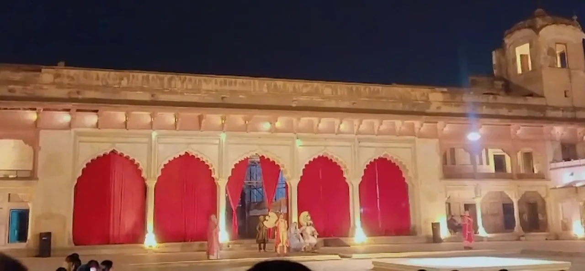

Lahore changes after dark. The traffic thins, the old monuments are lit in warm gold, and the city's Sufi traditions come alive with drums, music and devotion. This short video was filmed by our team on a recent Sufi Night tour, at Lahore Fort, and it is one of our favourite moments to share on Instagram.
Lahore Fort after dark
By day, Lahore Fort (the Shahi Qila) is busy with school groups and visitors, and the sun on the red sandstone and marble can be fierce. At night it feels completely different. Lights pick out the carved arches and domed pavilions, the air is cooler, and the courtyards become a stage.
In the video you can see performers in Mughal costume in front of five red-curtained arches, re-creating a scene from the royal court while the audience watches from the courtyard. It is a lovely way to understand how these buildings were used, not just how they look.
The Walled City of Lahore Authority runs evening visits and night tours at the fort, with lighting, storytelling and live performances. The schedule, days and ticket prices change from season to season, so we check them for each group and plan the evening around them.
Lahore's Sufi nights
Sufism has shaped Lahore for nearly a thousand years. The city grew up around the shrine of Data Ganj Bakhsh (Data Darbar), and its saints are still honoured every week with music and devotion. A Sufi night is not a show put on for tourists: it is a living tradition that you are welcome to watch with respect.
- Data Darbar: the shrine of the 11th-century saint Ali Hujwiri, one of the most visited Sufi shrines in South Asia, busy and atmospheric in the evening
- Shah Jamal: a small shrine famous for its night of dhol drumming and dhamal, the spinning devotional dance, in the tradition of the legendary drummer Pappu Sain
- Qawwali: devotional songs with harmonium, tabla and clapping, performed at shrines on many evenings
What our Sufi Night tour includes
- An evening visit to Data Darbar
- Dhol and dhamal at the Shah Jamal shrine
- Qawwali music where it is being performed that night
- A local expert guide who explains the history, the rituals and what is happening around you
- All entry tickets, a shoe basket and a bottle of water
The tour usually starts at about 9:50 pm. We can add time at Lahore Fort in the evening when its night programme fits your dates, just as we did on the tour in the video. Prices start from US$40 per person for a solo traveller and drop for groups; see the Night Sufi Shrine Tour for details.
Tips for a Sufi evening in Lahore
- Dress modestly, with shoulders and knees covered. Women may want a light scarf
- Wear shoes that are easy to slip off, because shoes come off inside shrines
- Carry a little cash in small notes, and keep your phone and wallet in a front pocket in the crowds
- Ask before photographing people, and put the camera away during prayers
- October to March is the most comfortable season for evenings out in Lahore
- For the rest of your stay, see our one-day Lahore itinerary and what to wear in Lahore
Frequently asked questions
Can you visit Lahore Fort at night?
Yes. The Walled City of Lahore Authority runs evening visits and night tours at Lahore Fort, usually with lighting, storytelling and live performances. Days, times and ticket prices change by season, so check the current schedule before you go, or ask us and we will check for you.
What happens on a Sufi night in Lahore?
Our Sufi Night tour visits Data Darbar in the evening, then the Shah Jamal shrine for dhol drumming and dhamal, the spinning devotional dance, with qawwali music where it is being performed that night.
What should I wear?
Dress modestly, with shoulders and knees covered. Women may want a light scarf for the shrines. Shoes come off inside shrines, so wear shoes that are easy to take off and put on.
Is the Sufi Night tour private?
Yes, it is private for you and your group by default, with an English- or Urdu-speaking guide. You can also join a shared small group.
Plan your Sufi night with Past Enlighten
Tell us your dates on WhatsApp and we will check what is happening at the shrines and at Lahore Fort that week, and plan the evening around it. You can pair it with our Lahore Fort and Walled City heritage walk during the day.
Video: Past Enlighten. Follow @pastenlighten on Instagram for more from Lahore.
Explore with Past Enlighten
Ask about route options, dates and what is included. Confirm the price and itinerary in writing before you book.
Continue planning
Travel conditions, access, schedules and prices can change. Confirm current details locally before departure.